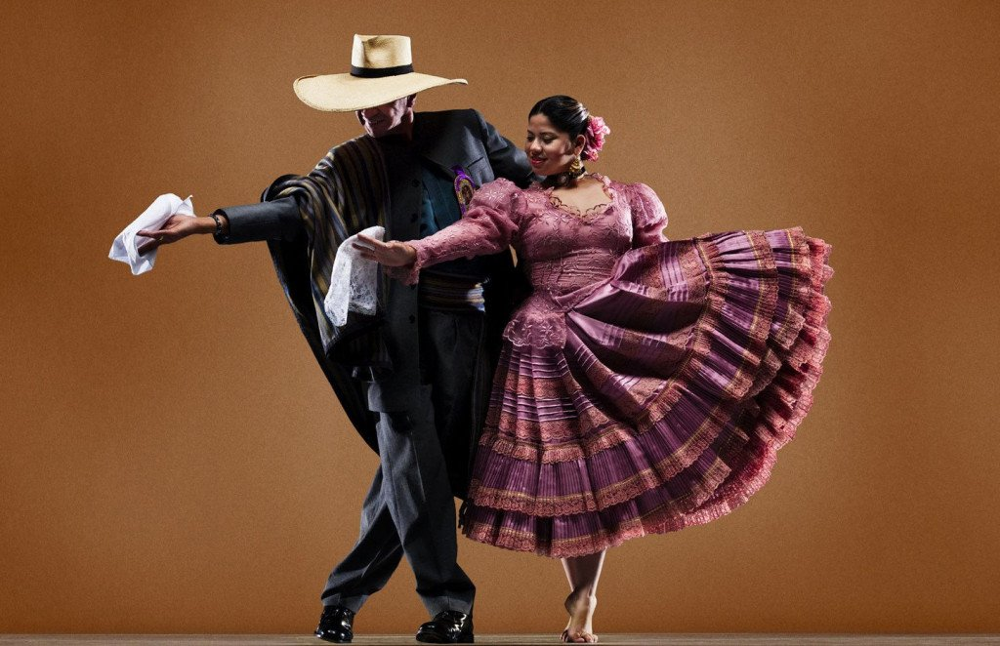
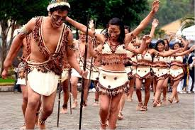

Costa
La costa vibra con ritmos afroperuanos y criollos, llenos de energía y tradición.
Ver másSierra

La sierra celebra con danzas que reflejan la vida andina y su conexión con la tierra.
Ver másSelva
La selva late al ritmo de la naturaleza, con danzas llenas de color y vitalidad.
Ver más